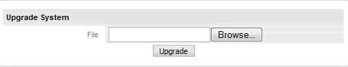

- Safety Precautions before Upgrading
- Restoring ProcessMaker If Problems Arise
- Upgrading to version 1.8-712 and later
- Upgrading the source code
- Upgrading the ProcessMaker databases
- Options for the
processmakercommand - Upgrading ProcessMaker 1.6 and earlier
- Errors while Upgrading
- Upgrading from version 1.2-2985
- Upgrading from version 1.X to 2.X
Follow these instructions to upgrade ProcessMaker 1.X. In version 1.6 and earlier, ProcessMaker is upgraded by applying patches. In version 1.8 and later, ProcessMaker is upgraded by overwriting the existing source code.
If upgrading from version 1.X to version 2.X, patches must be applied to upgrade ProcessMaker to version 1.6-4282. After that, the the code can be overwritten to upgrade to version 2.X. See Upgrading from version 1.X to 2.X.
It is important to follow the correct upgrading procedure so that the PHP source code, the file locations, and the MySQL databases holding ProcessMaker data will all be simultaneously updated to work together. The structure of the databases and the file locations may be changed from one version of ProcessMaker to the next, so do NOT try to use data from one version of ProcessMaker in a different version of ProcessMaker.
Safety Precautions before Upgrading
Before upgrading ProcessMaker, it is recommended to first install the new version of ProcessMaker on a separate test server (or in a separate port or domain in the same server) and import your processes into the test server to verify that there are no incompatibilities.
Before upgrading ALWAYS make a complete backup copy of directory where ProcessMaker is installed and use mysqldump to make a complete backup of the 3 databases used by each workspace. If an error arises, it will be possible to go back to the previous version of ProcessMaker and restore its data.
NOTE: It is not very easy to restore a previous version of ProcessMaker with just a backup created with the gulliver workspace-backup command, so it is recommended to make full ProcessMaker backups using the method below.
Linux/UNIX:
tar command to make an archive of the ProcessMaker installation directory, which is usually located at /opt/processmaker:
To make a backup copy of the entire MySQL database:
To back up just the databases for a ProcessMaker workspace, such as the "workflow" workspace:
TIP: If unsure what the MySQL databases are named, login to MySQL and issue the command:
SHOW DATABASES;
Windows:
Use a compression program like 7-Zip or WinRar to make a backup copy of the ProcessMaker installation directory, which is usually located at c:\Program Files\ProcessMaker\processmaker (if installed version 1.6-4260 and later) or c:\Program Files\ProcessMaker\apps\processmaker (if installed a version before 1.6-4260).
Open a command prompt window (by going to Start > All Programs > Accessories > Command Prompt) and navigate to the directory where the mysqldump command is located:
Then, enter use the mysqldump command to backup the MySQL databases as shown above for Linux/UNIX. Note that if ProcessMaker was installed before version 1.6.4260, then the reports database is named "rpWORKSPACE" (without underscore), so the command to backup the "workflow" workspace would be:
Restoring ProcessMaker If Problems Arise
If problems arise due to the upgrade, use the backup files to rollback to the previous version of ProcessMaker.
Linux/UNIX:
Login as "root" or use the sudo command. Then, remove the ProcessMaker installation directory and replace it with the backup:
Then, restore the databases:
Windows:
Delete the current ProcessMaker installation directory, which is usually located at c:\Program Files\ProcessMaker\processmaker (if installed version 1.6-4260 and later) or c:\Program Files\ProcessMaker\apps\processmaker (if installed a version before 1.6-4260). Then, decompress the backup file in its place.
Open a command prompt window (by going to Start > All Programs > Accessories > Command Prompt) and navigate to the directory where the mysql command is located:
Then, restore the MySQL databases:
Upgrading to version 1.8-712 and later
New versions of ProcessMaker will no longer use the patches to upgrade. To ensure that all code has been properly upgraded, all code will be replaced with the new version's code, rather than being patched onto the old code. In addition, a new utility has been added to ProcessMaker to upgrade the ProcessMaker databases for the new code.
WARNING: If using a version of ProcessMaker before 1.8-712, it may not be possible to upgrade to a more recent version of ProcessMaker.
Please do NOT attempt upgrading ProcessMaker before verifying whether it is possible:
- ProcessMaker version 1.8 and later requires MySQL 5.1.6 or later.
- The
processmaker upgradescript in version 1.8 or later expects all its files to be in the locations used by the tarballs, rpm, and the new Windows Installer.
If ProcessMaker was installed using the old Windows Installer (prior to version 1.6-4260), do NOT upgrade to version 1.8 or later, because the files are in the wrong location. The ProcessMaker development team is working on a fix to the processmaker upgrade script, so please await future instructions.
If using a version of MySQL which is older that 5.1.6, first make a backup of all the MySQL databases with mysqldump. Then install an newer version of MySQL and then restore the MySQL databases. After that, follow the normal procedure to upgrade ProcessMaker.
Upgrading MySQL will be necessary with the following systems:
- Red Hat/CentOS 5 or older (uses MySQL 5.0.77)
- Debian 5.0 (Lenny) or older (uses MySQL 5.0.51a)
- SUSE Enterprise Linux 11-SP1 or older (uses MySQL 5.0.67)
Upgrading the source code
After making a backup of the existing ProcessMaker installation, follow the steps below to install the new ProcessMaker source code, overwriting the old source code.
- Go to http://sourceforge.net/projects/processmaker/files/ProcessMaker and download a processmaker-X.X.X.tar.gz file, which has a new version of the ProcessMaker source code.
- Save the processmaker-X.X.X.tar.gz file to the same directory where ProcessMaker is currently installed. In Linux/UNIX, ProcessMaker is generally installed at /opt, and in Windows, it is generally installed at C:\Program Files\ProcessMaker in Windows XP or Server 2003 or at C:\Users\USERNAME\AppData\Roaming\ProcessMaker\processmaker in Windows Vista and later.
- Decompress the pmos-X.X-X.tar.gz file, overwriting the existing processmaker directory and all its contents.
Linux/UNIX:
Issue the following commands as the "root" user (or with the sudo command):
Make sure to use the -p option to preserve the permissions of existing files. Otherwise, it will be necessary to reset the file permissions.
Then, issue the following commands as the "root" user (or with the sudo command) so that ProcessMaker can access the necessary files when run by the Apache server:
The apache-user:apache-group depends upon the distribution:
- Red Hat/CentOS/Fedora:
chown -R apache:apache /opt/processmaker - Debian/Ubuntu/Mint:
chown -R www-data:www-data /opt/processmaker - SuSE/OpenSUSE:
chown -R wwwrun:www /opt/processmaker
Windows:
Use a decompression program like 7-Zip or WinRAR which supports the tar.gz format to decompress the file and overwrite the existing processmaker directory.
Do NOT delete the old processmaker directory and then copy the new processmaker directory into the same place, because all the essential configuration information and all the uploaded input documents and attached files from the old installation will be lost. Instead, decompress the file so it will overwrite any existing files but won't effect any other files (such as the contents of the shared and workflow/engine/config directories and the workflow/engine/test/bootstrap/gulliverConstants.php file).
Upgrading the ProcessMaker databases
After upgrading the processmaker source code, then use the processmaker upgrade command to upgrade the 3 databases used by each ProcessMaker workspace. The databases have be upgraded because the table structure may have been modified in the new version.
Go to the processMaker installation directory and run the processmaker upgrade command from the command line.
Linux/UNIX:
Login as root or use the sudo command, then:
Note: If an error message appears such as "/usr/bin/env: php: No such file or directory", then make sure that the PHP Command Line Interface is installed (whose package is named php-cli in Red Hat/CentOS/Fedora and php5-cli in Debian/Ubuntu). If PHP-CLI is already installed, then it is not installed in a location found in your $PATH, so use the full path when executing PHP-CLI:
Windows:
Login as an Administrator and open the Command Prompt (by going to Start > All Programs > Accessories > Command Prompt) and enter:
Options for the processmaker command
In most cases, running the processmaker upgrade command will be sufficient when upgrading, but other commands are available if a finer degree of control is needed:
./processmaker upgrade
Checks the integrity of all source code files and then runs upgrade on all available workspaces../processmaker workspace-upgrade [WORKSPACE1 WORKSPACE2 ...]
Without arguments,workspace-upgradewill upgrade all available workspaces. If the workspaces names are specified, then only those workspaces will be upgraded.
workspace-upgradewill execute the three following commands on each workspace:./processmaker database-upgrade
Checks the database schema and upgrade it if necessary../processmaker translation-upgrade
Updates translations from the existing PO translation files../processmaker cacheview-upgrade
Updates the wf_.APP_CACHE_VIEW tables and triggers.
Upgrading ProcessMaker 1.6 and earlier
From release pmos-1.0-1142 on, it is possible to upgrade ProcessMaker with patches, thus keeping your existing processes and case information intact. The upgrade patches update the source code, the MySQL tables, and the interface message tags.
First, find out what version of ProcessMaker you are currently using by going to the ProcessMaker login screen at:
http://IP-ADDRESS:PORT/sysWORKSPACE/LANG/green/login/login.html
For instance, if ProcessMaker is installed on your local machine at the default port 80 with the default workflow workspace, then go to:
http://localhost/sysworkflow/en/green/login/login.html
If the workspace is specified in the login URL, a System Information link will be shown at the bottom of the screen. Click on it to find the version of ProcessMaker.

If two version numbers are shown separated by a dash, it means that ProcessMaker was upgraded from one version to another with a patch.
Go to http://sourceforge.net/projects/processmaker/files/ and check to see whether there is a patch available to upgrade from your current version to the latest version of ProcessMaker. It should be listed as pmos-patch-old_version-new_version.tar.gz. For instance, if you are upgrading from version 1.2-2372 to version 1.2-2425, you would look for the file pmos-patch-2372-2425.tar.gz.
After downloading the patch, click on the ADMIN menu (before version 1.2-2552 it was called the SETUP menu), and select Upgrade System. Select the patch file and then click on the Upgrade button to update ProcessMaker.
If the patch file is too large to upload, you'll need to increase the value upload_max_filesize in file \ProcessMaker\php\php.ini, and also post_max_size e.g post_max_size=20M
From version 1.2-2467 on, ProcessMaker will display detailed information about the upgrade:
- Information: Displays version numbers of upgrade.
- Affected Files: Lists files which are changed by the upgrade. A indicates an added file, U indicates an upgraded file and D indicates a deleted file. An underscore (_) before the letter indicates a directory, rather than a file.
- Environments Updated: A list of the workspaces upgraded. Unless additional workspaces have been added, this will usually just be the default workflow.
- Errors: Any errors encountered while upgrading or "- None -" if no errors were encountered.
If more detailed information is needed about which tables have been altered by the upgrade, look in the list of "Affected Files" for files with the extension ".sql". These are files with standard SQL statements to alter the tables used by ProcessMaker. Decompress the patch file and examine the contents of the .sql files. In Windows the open source program 7-Zip can decompress tar.gz files. In Linux/UNIX, use the commands:
The list of affected files is found in the root of the patch in files.lst. All the files are found inside the processmaker directory in their normal paths.
Note: If applying a patch to ProcessMaker 1.2-2552 or earlier version, the patch will only upgrade the current workspace. If you have more than one workspace, login into each workspace and apply the patch for each workspace.
Applying successive patches
If you do not see a patch for your version of ProcessMaker, you will have apply successive patches to get to a version of ProcessMaker which does have a patch for the latest version. For instance, version 1.1-1999 of ProcessMaker can be upgraded to version 1.2-2425 by successively applying the following patches:
- pmos-patch-1999-2063.tar.gz
- pmos-patch-2063-2111.tar.gz
- pmos-patch-2111-2153.tar.gz
- pmos-patch-2153-2244.tar.gz
- pmos-patch-1.1.2244-1.2.2261.tar.gz
- pmos-patch-2261-2284.tar.gz
- pmos-patch-1.2.2284-1.2.2329.tar.gz
- pmos-patch-2329-2372.tar.gz
- pmos-patch-2372-2425.tar.gz
Deleting ProcessMaker's compiled Cache
After upgrading ProcessMaker, it is a good idea to delete processMaker's compiled cache and refresh your web browser's cache.
Errors while Upgrading
If an error occurs while upgrading, the first step is to verify that the patch file was correctly downloaded. Download the patch file a second time and reapply the patch. (It doesn't hurt to reapply the same patch multiple times.) If the error persists, then check to see whether it might be one of the following errors. Also note that patches are not guaranteed to work on modified source code for ProcessMaker.
Timeout Error
If a timeout error occurs before the update process has finished, edit your php.ini file to increase the value of the max_execution_time. For instance, to allow ProcessMaker to take up to 180 seconds to execute an upgrade:
Then, restart Apache for the new PHP configuration to take effect.
File Size Error
By default, PHP is configured to allow the upload of files no larger than 2MB. If the upgrade patch file is larger than 2MB, then the configuration of PHP will have be to modified, to allow for larger file uploads. Edit your php.ini file to increase the values of the upload_max_filesize and post_max_size settings.
For example, to set the maximum file upload size to 16MB, look for the "File Uploads" section and set the following settings:
Then, restart Apache for the new PHP configuration to take effect.
Upgrading from version 1.2-2985
If upgrading from version 1.2-2985 to a higher version, the pmos_patch_3250-3250.tar.gz patch. Then, apply the pmos-patch-2985-4260.tar.gz patch. (Remember to increase PHP's Maximum File Size if the patch is larger than 2MB.)
If you tried to upgrade from 1.2-2985 without applying this patch, you will encounter errors. To fix the upgrade, simply apply the pmos_patch_3250-3250.tar.gz patch, then apply the subsequent patches again.
Upgrading from version 1.X to 2.X
Follow the steps below to upgrade ProcessMaker from version 1.X to 2.X.
1. Make a backup of ProcessMaker:
Linux/UNIX:
Windows:
Use WinRar or WinZip and make the backup of the ProcessMaker directory.
2. Make a backup of the Databases:
3. Download and apply the patches which are necessary to upgrade to version 1.6-4282.
For example, if going from version 1.2-2985 to 1.6-4282, then go to ProcessMaker 1.2-2985 and download the pmos-patch-2552-2985.tar.gz patch. Then apply it by going to ADMIN > Settings Upload in ProcessMaker. Upload the patch file and click on the Upgrade button. Then, go to ProcessMaker 1.6 patches and download the pmos-patch-2985-4282.tar.gz patch. Then, apply it in the same way by going to ADMIN > Settings Upload in ProcessMaker.
4. Then, download .tar file for ProcessMaker 2.X
5. Then decompress the file in the directory of ProcessMaker and replace all the files.
Linux/UNIX:
As the "root" user or with the sudo command:
Windows: Use WinRar or WinZip and decompress the tar file in the directory where ProcessMaker is installed.
6. Execute the following commands to upgrade the files and databases for the new version:
9. Finally go to Settings -> Cases List Cache Builder and click on Build Cache. Also clear the ProcessMaker cache and clear the web browser's cache.